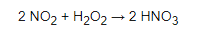
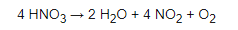
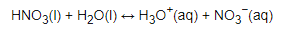
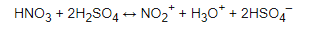

Základné informácie
Kyselina dusičná alebo lúčavka (lat. aqua fortis) je anorganická kyselina. Čerstvá a čistá je bezfarebná, staršia má žltkastú farbu, kvôli hromadeniu oxidov dusíka. Je to silná žieravina, poškodzuje pokožku a sliznicu, jej výpary sú vysoko nebezpečné. Po kyseline sírovej je druhou najvýznamnejšou kyselinou.
Výroba
Kyselina dusičná sa vyrába reakciou oxidu dusičitého s vodou, alebo peroxidom vodíka:
Reakcie
Je nestála, na vzduchu a svetle sa rozkladá na červenohnedý jedovatý plynný oxid dusičitý:
- Acidobázické vlasnosti:
Disociačná konštanta kyseliny dusičnej je zvyčajne menej ako -1, čo znamená, že táto kyselina je v roztoku úplne disociovaná, okrem extrémne kyslých roztokov:
Kyselina dusičná, vzhľadom ku kyseline sírovej, vystupuje ako báza:
Využitie
Kyselina dusičná sa používa na výrobu umelých hnojív, trhavín, leptanie a rozpúšťanie kovov, ako zložka lúčavky kráľovskej na čistenie a extrakciu zlata a v syntéze chemikálií.
- Raketové palivo:
Kyselina dusičná bola použitá v rôznych formách ako oxidačné činidlo v tekutom raketovom palive. Tieto formy zahŕňajú červenú a bielu dymivú kyselinu dusičnú, zmesi s kyselinou sírovou a fluorovodíkom.
Ďalej:
- Chemický reagent
- V stolárstve